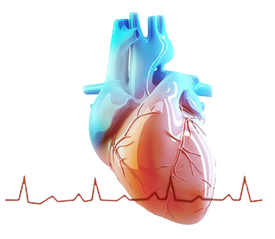

The process of adjusting a medical device to ensure accurate readings.
Routine care and upkeep to ensure proper functioning of medical devices.
The process of cleaning medical devices to remove all forms of microbial life.
Impaired relaxation of the heart, leading to difficulty in filling with blood.
A balloon catheter that releases medication to prevent restenosis of the artery.
Immediate medical treatment provided in response to urgent health situations.
The performance of the inner lining of blood vessels, crucial for vascular health.
A minimally invasive surgical procedure that uses catheters within blood vessels.
A measure of blood flow in a coronary artery to determine the severity of blockages.
A flexible wire used to guide catheters and other devices during cardiovascular procedures.
A condition in which the heart is unable to pump blood effectively.
The number of heartbeats per minute.
The tracking of blood pressure and other aspects of cardiovascular performance during medical care.
Treatments and devices used to maintain adequate blood flow and pressure.
The way the intra-aortic balloon pump works to support the heart.
The pressure used to inflate a medical balloon during angioplasty or other procedures.
A physician specializing in minimally invasive, catheter-based treatments for heart conditions.
